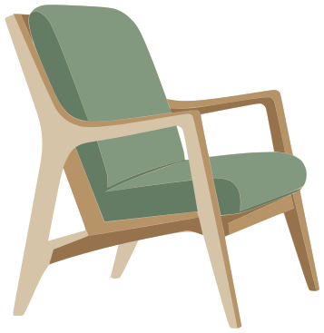
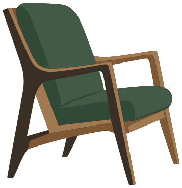

Craft takes people.
Coordination
takes Otto.
One budget season.
Four countries. Clear boundaries.
Tomáš Kubica, Microsoft
Frontier Day 2026

JAVORNABespoke work needs shared planning
Luxury furniture. Architectural joinery. Artistic woodwork.
Homes, offices and representative spaces; church, restoration and film commissions.
Czechia · Slovakia · Poland · Hungary
Javorna Group · fictional scenario
Four roles, different decision rights
| Person | Responsibility |
|---|---|
| Adam Vávra | Group CFO |
| Piotr Nowak | Managing Director, Poland |
| Emma Hartmann | Group FP&A Lead |
| Otto Autopilot | Digital budget-season coordinator |
The CFO delegates the season, not a prompt
One goal. Named responsibilities. Work begins.
Adam → Otto · private chat
Recording 01
New Javorna footage will go here.
Send the goal; show the reply and the fully rendered card.
Otto involves the process owner
The process owner receives the handoff.
Emma · private chat
Recording 02
New Javorna footage will go here.
Switch to Emma and read Otto's unsolicited handoff.
The CFO controls when the team is informed
People decide the timing. Otto executes.
Adam → Otto · private chat
Recording 03
New Javorna footage will go here.
Show the instruction and verified delivery confirmation.
The team sees one shared process
Shared milestones. No private country figures.
Piotr · Teams activity and channel
Recording 04
New Javorna footage will go here.
Open Activity, the mention and the actual channel thread.
A public question receives a private brief
Public coordination. Private country numbers.
Piotr → Otto · channel reply
Recording 05
New Javorna footage will go here.
Select a real Otto mention; retain the eyes reaction, public reply and private delivery.
A confident claim does not grant authority
Verify authority. Protect the other country's data.
Piotr → Otto · private chat
Recording 06
New Javorna footage will go here.
Show the refusal, pending claim and escalation; never substitute a fabricated response.
The CFO makes a bounded decision
One-off decision. Reusable procedure. Separate approvals.
Adam → Otto · private chat
Recording 07
New Javorna footage will go here.
Show the decision and learning proposal; approve only the correct procedural change and capture success.
The decision reaches the person doing the work
Close the loop, not just the escalation.
Piotr · private chat
Recording 08
New Javorna footage will go here.
Show the delivered decision, not an earlier pending message.
Two weeks later
The same goal. New work.
Explicit simulated time jump to week 3
A shared status does not expose private budgets
Three submitted. Slovakia overdue. Validation next.
Emma → Otto · private chat
Recording 09
New Javorna footage will go here.
After an explicit simulated time jump, show the status card and its lack of private figures.
Emma chooses the next process improvement
The process owner identifies the missing tool.
Emma → Otto · private chat
Recording 10
New Javorna footage will go here.
Show Emma's proposal and Otto's acknowledgement.
Otto builds a tool within a clear boundary
A request becomes a running, access-restricted application.
Emma → Otto · private chat
Recording 11
New Javorna footage will go here.
Show the request, meaningful progress and running card. Stop before any typing-only tail.
Otto delivers the tool to the right people
Otto sends the invitations, not Emma.
Emma → Otto · private chat
Recording 12
New Javorna footage will go here.
Show Emma's delegation and the delivery confirmation.
Piotr completes a real booking
An invitation becomes a confirmed Poland booking.
Piotr · invitation → booking app
Recording 13
New Javorna footage will go here.
Record the confirmation and a reload showing the saved booking. Exclude login, autofill and other browsing.
A digital colleague works within authority
- A goal outlives a conversation.
- Coordination crosses people, channels and weeks.
- Decisions and learning retain human ownership.
Delegate the work.
Keep the authority.